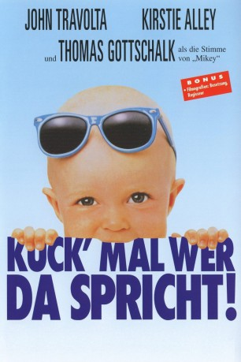

#5218 Kuck' mal wer da spricht!
Alternativ: Look Who's Talking
 
 IMDB-Wertung: 5.8 / 10
IMDB-Wertung: 5.8 / 10  Metascore: 0
Metascore: 0 
Kein Zweifel, dieser Mickey ist anders als alle anderen Babies. Nach außen hin quiekt, quengelt und brüllt auch er, wie es sich für einen strammen Siebenpfünder gehört. Doch insgeheim sieht er die Welt bereits wie ein Großer. Frech und unverblümt kommentiert Mickey so ziemlich alles, was ihm unter die Augen kommt: Die kindische Oma, den komischen Kerl, der sich einbildet sein Vater zu sein, die schöne, doch einsame Mama. Am liebsten aber unterhält sich der Kleine mit James, dem neuen, wirklich süßen Babysitter. Den könnte sich Mickey sogar als Daddy vorstellen. Vorausgesetzt, Mama macht mit…
Jahr: 1989
Dauer: 95 Minuten
FSK: 12
Land: USA Studio: TriStar PicturesTonspuren:
Untertitel: Deutsch, Englisch,
Auflösung: 1080p (1920x1080) Größe: 10106 MB
Genre: Komödie
Regisseur: Amy Heckerling
Drehbuch: Bill Forsyth
Soundtrack:
Darsteller:
 John Travolta als James
John Travolta als James Kirstie Alley als Mollie
Kirstie Alley als Mollie Olympia Dukakis als Rosie
Olympia Dukakis als Rosie George Segal als Albert
George Segal als Albert- Abe Vigoda als Grandpa
 Bruce Willis als Voice of Mikey
Bruce Willis als Voice of Mikey- Twink Caplan als Rona
 Don S. Davis als Dr. Fleisher
Don S. Davis als Dr. Fleisher- Brenda Crichlow als Secretary
- Alex Bruhanski als Street Worker
 William B. Davis als Drug Doctor
William B. Davis als Drug Doctor Jerry Wasserman als Mr. Anal
Jerry Wasserman als Mr. Anal Blu Mankuma als Director
Blu Mankuma als Director- Mollie Israel als Little Girl
- Jason Schaller als Mikey
- Jaryd Waterhouse als Mikey
- Jacob Haines als Mikey
- Christopher Aydon als Mikey
- Joy Boushel als Melissa
- Louis Heckerling als Lou
- Andrea Mann als Salesgirl
- Douglas Tuck als Cab Stealer
- Casey Grant als Admitting Clerk
- Oscar B. Ramos als Hospital Worker
- Aurelio DiNunzio als Orderly
- Jeff Irvine als Admitting Doctor
- Shirley Barclay als Nurse
- David Berner als Mr. Impatience
- Daliah Novak als Carrie
- Zena Darawalla als Lupe
- Nicholas Rice als Harry
- Neal Israel als Mr. Ross
- William Britos als Home Orderly
 Dee Jay Jackson als Burly Orderly
Dee Jay Jackson als Burly Orderly- Ida Berner als Lady
- Bea Cartmell als Lady
- Eleanor Maines als Lady
- Ryan McIntosh als Little Boy
- Gerry Bean als Pilot Friend
- Deryl Hayes als Pilot Friend
- Enid Saunders als Ester
- Nicole Stevens als Silly Baby
- Christy Smith als Baby Megan
- Sabrina Bailey als Sand Box Baby
- Farah Abassi als Chatting Baby
- Amber Brownmiller als Blowing Kiss Baby
- Ariel Perryman als Nursery Baby
- Nigel John Crowe als Nursery Baby
Datei: X:\3-Trilogie(G-M)\Kuck mal wer da spricht\Kuck' mal wer da spricht! (1989, FSK12, 1920x1080).mkv seit 02.01.2017
Festplatte: HD Collection-2(A-Z)-3(A-M)
 Alle Filme aus Gruppe '3-Trilogie(G-M)\Kuck mal wer da spricht'
Alle Filme aus Gruppe '3-Trilogie(G-M)\Kuck mal wer da spricht'